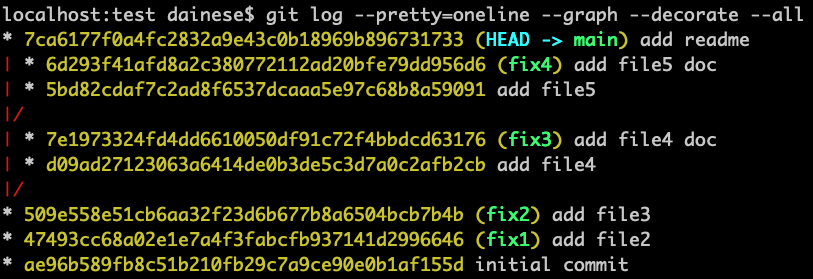
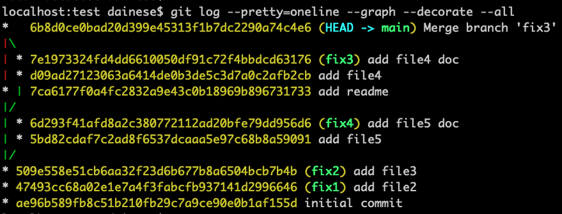
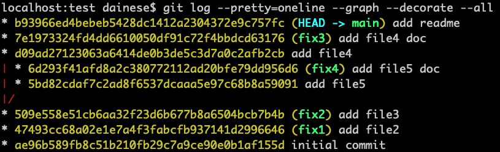
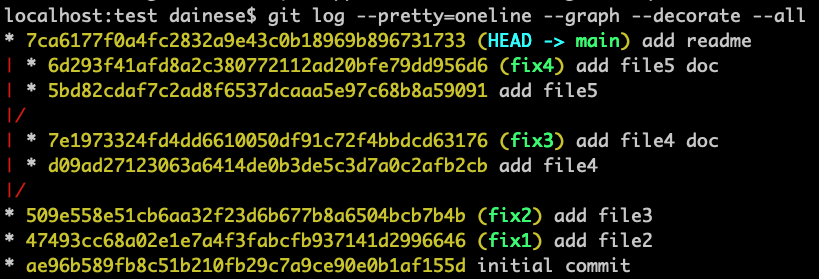
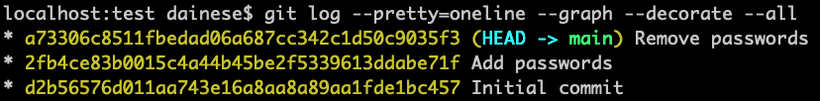
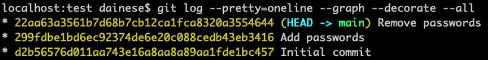
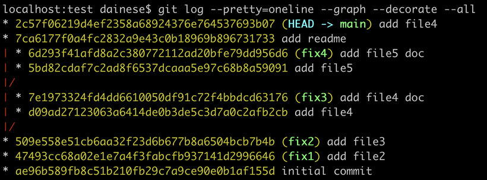

Advanced Git commands¶

In the last two posts, we covered most of the essential Git features. Now, let's dive into some additional functionalities that might come in handy.
.gitignore¶
The .gitignore file is used to specify which files or directories should never be included in your Git repository. This file is tailored to each repository and typically excludes:
- Cache files
- Compiled files
- Temporary files
- Password files
You can either start with GitHub’s suggested templates or create your own using the correct format.
Stashing your work¶
Sometimes you need to put aside your current work to focus on something more urgent. If you’ve made changes but aren’t ready to commit, switching branches won’t work because Git doesn’t know how to handle uncommitted changes.
$ git checkout master
error: Your local changes to the following files would be overwritten by checkout:
file1.py
file2.py
This is where stash comes in. It saves all your changes, including those staged for commit, and allows you to retrieve them later:
Now you can safely switch branches. To retrieve the stashed changes later:
$ git stash pop
On branch test4
Changes to be committed:
(use "git restore --staged <file>..." to unstage)
new file: file5.py
Changes not staged for commit:
(use "git add <file>..." to update what will be committed)
(use "git restore <file>..." to discard changes in working directory)
modified: file1.py
modified: file2.py
Dropped refs/stash@{0} (add5e575a2620fee2141b1c97ab4ba8bc5d245f9)
You can also list all stashed changes with:
Deleting Remote Branches¶
While local branches can be deleted with the branch command, deleting a remote branch involves a push:
$ git push origin --delete allied_telesis_show_arp
To https://github.com/dainok/ntc-templates
- [deleted] allied_telesis_show_arp
Rebase¶
Rebase lets you integrate changes in a way similar to merge, but it reapplies a series of commits starting from a different base, effectively rewriting the history of the repository. Be cautious, this can cause inconsistencies, especially in public repos where multiple people collaborate.
For example, in a repo with main and branches fix3 and fix4 waiting to be merged:

If we merge the fix3 branch, we notice that the commit IDs have been preserved:

The rebase operation, on the other hand, allows us to modify the repository history by reapplying the commits from the fix3 branch:

We can see that the commit ID for "add readme" has changed, which creates inconsistencies for users who haven't performed the rebase operation.
Squashing commits¶
When merging, all commits from a branch are typically preserved. Over time, this can create unnecessary overhead. You can instead consolidate multiple commits into one:
$ git merge --squash fix3
Squash commit -- not updating HEAD
Automatic merge went well; stopped before committing as requested
This prepares the commit without applying it, so you can review before finalizing. After squashing, the entire history of the branch is condensed into a single commit.
Using the repository from the previous example, we can see that the fix3 branch is not connected to the main branch:

At the end of the merge, we can delete the fix3 branch as it is no longer needed.
Reinitializing a repository¶
Sometimes, you may want to reset your repository and wipe out its history, for example, when making a private repo public. Here’s how you can do that:
mv .git/config config.git
rm -rf .git
git init -b master
mv config.git .git/config
git add .
git commit -m "Initial commit"
git push -u --force origin master
Here are the steps in detail:
- saved the repository configuration
- deleted the repository structure
- reinitialized the repository
- added all content to the staging area
- made the first commit
- pushed the changes, overwriting the remote state
It’s important to note that when using services like GitHub, commits can still be recovered if their ID is known. To completely erase a repository’s history on GitHub, the repository must be deleted and recreated.
Undoing the last commit¶
You can undo your last commit without losing your changes using:
This only works if you haven’t pushed the commit yet. Once pushed, the commit remains recoverable via its ID.
Recovering a deleted file¶
Git tracks everything, so even if you commit a file that shouldn’t have been added and then delete it, it’s still retrievable. To list deleted files:
Then, find the commit ID:
localhost:test dainese$ git rev-list HEAD -n 1 -- password.txt
a73306c8511fbedad06a687cc342c1d50c9035f3
And recover the file:
I’ve created a simple script that automates this process, available in my GitHub repository.
Permanently Removing Deleted Files¶
We have seen that a Git repository always keeps references to deleted files. There is a handy tool that removes deleted files from the history:

If we use bfg on the repository, the files will also be removed from the history:
As you can see, the commit IDs have changed:

However, the commit ID still exists, and if the ID is known, it can be recovered:
$ git checkout 2fb4ce83b0015c4a44b45be2f5339613ddabe71f
localhost:test dainese$ ls password.txt
password.txt
To fix this, we need to clean the cache:
$ git reflog expire --expire=now --all && git gc --prune=now --aggressive
Enumerating objects: 5, done.
Counting objects: 100% (5/5), done.
Delta compression using up to 12 threads
Compressing objects: 100% (3/3), done.
Writing objects: 100% (5/5), done.
Total 5 (delta 2), reused 0 (delta 0), pack-reused 0
The last operation, however, cannot be performed on remote repositories like GitHub.
Updating a Fork¶
As we’ve seen, once you fork a repository, it no longer gets updated. If you need to submit a patch after a long time, it’s important to start from an updated repository. You can either delete the fork and refork it, or update it. Here's how to update it:
As you can see, we are updating the master branch from the upstream remote. Any other branches, either local or on other remotes (like origin), will remain unchanged.
Updating a branch¶
When working on a branch for a long time, it may diverge significantly from the main branch, whether local or remote:
Selective merge¶
In some cases, you may need to perform a selective merge, picking specific commits. Let’s take an example we've seen before:

Now, we want to merge only one commit from the fix3 branch:
$ git cherry-pick d09ad27123063a6414de0b3de5c3d7a0c2afb2cb
[main 2c57f06] add file4
Date: Fri Sep 13 14:47:10 2024 +0200
1 file changed, 0 insertions(+), 0 deletions(-)
create mode 100644 file4.py
After the merge, the situation will look like this:

Tag¶
We can use tags to mark a commit, which will then be associated with a release. Here's how to create a tag: